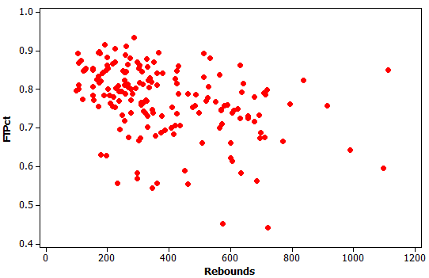

Comparing a quantitative variable across the groups of a categorical variable, and describing the relationship between two quantitative variables with scatterplots and correlation.
Two Kinds of Relationships
The tools depend on the types of the two variables involved.
Quantitative + Categorical
Does the quantitative variable differ across the groups?
Visualize: side-by-side boxplots, one per group.
Summarize: statistics by group (mean, median, SD, IQR).
Compare: the difference in means, \(\bar{x}_1 - \bar{x}_2\).
Quantitative + Quantitative
Do the two variables tend to move together?
Visualize: a scatterplot.
Describe: direction, form, and strength.
Summarize: the correlation, \(r\).
Side-by-Side Boxplots
One boxplot for each category, drawn on the same scale, makes group comparisons easy.
Reading One Boxplot
Center: the line inside the box is the median.
Spread: the box spans \(Q_1\) to \(Q_3\), so its width is the IQR.
Shape: compare whisker lengths for skewness.
Outliers: points plotted individually beyond the whiskers.
Comparing Groups
Compare centers, spreads, shapes, and outliers group by group.
A summary statistic for two groups is the difference in means.
\[
\bar{x}_1 - \bar{x}_2
\]
Say which group is first so the sign of the difference has meaning.
Example: students who live off campus work a mean of 17.6 hours per week; on-campus students work 9.1. Then \(\bar{x}_{\text{off}} - \bar{x}_{\text{on}} = 17.6 - 9.1 = 8.5\) hours: off-campus students work about 8.5 more hours per week, on average.
Example 1: Smokers by Region of the Country
The side-by-side boxplot shows the percent of adult residents who smoke in each state, categorized by region of the country (Midwest, Northeast, South, or West).
Questions and Solutions
(a) In general, which region seems to have the highest percent of smokers? South: its median (20.2%) is the highest, and its whole box sits farthest right.
(b) In which region is the state with the lowest percent of smokers? West: its minimum, 9.0%, is the lowest value of any state.
(c) Which region has the least variability? Northeast: the smallest IQR (17.0 − 13.7 = 3.3) and the smallest range (18.7 − 13.0 = 5.7).
(d) Do any of the regions have any outliers? If so, which ones? No. No points are plotted beyond the whiskers. For example, the West's lower fence is \(13.2 - 1.5(4.4) = 6.6\), and its minimum, 9.0, is above it.
Example 2: Tea vs. Coffee and the Immune System
Participants were randomized to drink either tea or coffee every day for two weeks. Then blood samples were exposed to an antigen and an immune system response was measured (higher = stronger immune system).
(a) Does there appear to be a relationship between the categorical variable (tea or coffee) and the quantitative variable (immune response)? Yes. The two boxplots are in quite different places, so the immune response seems to depend on which drink a person had.
(b) Which group appears to have the stronger immune response? Tea. Its median (47) is far above the coffee median (15.5), and the tea \(Q_1\) of 13 is close to the coffee median.
(c) Are there outliers in either group? No. Coffee: IQR = 23, upper fence = 25.25 + 1.5(23) = 59.75, above the max of 52. Tea: IQR = 42, fences −50 and 118, so every value is inside.
Your Turn
Your Turn: Tea vs. Coffee: Descriptive Statistics
Descriptive statistics for the immune response (interferon gamma) in the two groups from Example 2 are shown.
Drink
\(n\)
Mean
StDev
Minimum
\(Q_1\)
Median
\(Q_3\)
Maximum
Coffee
10
17.70
16.69
0.00
2.25
15.50
25.25
52.00
Tea
11
34.82
21.08
5.00
13.00
47.00
55.00
58.00
Questions
(a) Give notation for and find the difference in means.
(b) Can we conclude that tea causes an increase in this aspect of the immune response? Why or why not?
(c) Reproduce the table and side-by-side boxplots with technology (steps at right).
On average, the tea drinkers' immune response was 17.12 units higher than the coffee drinkers'.
(c) What to Check in StatKey
The group means should match the table: 34.82 (tea) and 17.70 (coffee).
The tea box sits farther right than the coffee box.
StatKey may compute \(Q_1\) and \(Q_3\) with a slightly different rule, so they can differ a little from the table.
(b) Causation
Possibly, yes. Participants were randomly assigned to tea or coffee, so this is a randomized experiment, and other variables should be balanced between the groups.
The samples are small, though. A difference of 17.12 could partly be random chance. In Chapter 4 we will test whether a difference this large is statistically significant.
Scatterplots
A scatterplot shows the relationship between two quantitative variables.
How to Read One
Each point represents one case.
The explanatory variable is on the x-axis.
The response variable is on the y-axis.
Look for direction, form, and strength.
Direction of Association
Positive: both variables tend to increase together.
Negative: one tends to go up as the other goes down.
None: knowing one tells you nothing about the other.
Example 3: Positive or Negative Association?
As the first variable goes up, does the second tend to go up (positive) or down (negative)?
(a) Years of education and annual salary, for US adults. Positive. More education tends to go with higher salaries.
(b) Age and maximum running speed, for adults. Negative. Adults tend to get slower as they get older.
(c) Age and maximum running speed, for children. Positive. Children tend to run faster as they grow older.
(d) Age of the husband and age of the wife, for married couples. Positive. Older husbands tend to have older wives.
Parts (b) and (c) use the same two variables but give opposite directions. The association depends on the population being studied.
Correlation Coefficient
A single number that measures the strength and direction of a linear relationship.
Notation
Sample correlation: \(r\)
Population correlation: \(\rho\) (rho)
\[
-1 \le r \le 1
\]
Properties
\(r > 0\): positive association
\(r < 0\): negative association
\(r \approx 0\): no linear association
Closer to \(\pm 1\) means a stronger linear relationship
Unitless, and the same regardless of which variable is X or Y
Interpreting Correlation: rough guidelines for strength
Strong
\(|r|\) close to 1. Points cluster tightly around a line.
Moderate
\(|r|\) around 0.5. A clear trend with noticeable scatter.
Weak
\(|r|\) close to 0. Little or no linear pattern.
Example 4: Scatterplots and Correlation
For each scatterplot, which correlation value most closely approximates the correlation of the data? Judge the direction first (sign of \(r\)), then how tightly the points hug a line (size of \(r\)).
−1−0.9−0.500.50.91
Scatterplot A: \(r \approx 0.5\)
The points trend upward (positive) with a lot of scatter, so the relationship is only moderate. Actual \(r \approx 0.62\).
Scatterplot B: \(r \approx -0.9\)
The points trend downward and cluster tightly: strong. Not \(-1\), which needs every point exactly on a line. Actual \(r \approx -0.96\).
Example 5: Understanding Scatterplots
The scatterplot shows the relationship between number of rebounds in a season and free throw percentage for players in the National Basketball Association.

Each point is one NBA player for one season.
Questions and Solutions
(a) A player in the top left? The bottom right? Top left: few rebounds, high free throw %. Bottom right: many rebounds, low free throw %.
(b) Is the direction more positive or negative? Negative: the points drift downward from left to right.
(c) What does the direction mean in context? Players with more rebounds tend to have lower free throw percentages (rebounders are often taller players near the basket).
(d) Best guess at \(r\): −20, −2, −1, −0.9, −0.4, 0, 0.4, 0.9, 1, 2, 20? −0.4: negative but weak to moderate, with a lot of scatter.
(e) Which values in (d) are impossible? −20, −2, 2, 20, since \(-1 \le r \le 1\).
(f) Any outliers? Yes, a few: the two players below 0.5 (near 580 and 720 rebounds), and the few with about 1,000+ rebounds far to the right.
Correlation Cautions
Three important warnings when using correlation.
Outliers
Outliers can heavily influence \(r\). Always plot your data first.
Nonlinear
\(r = 0\) means no linear association. The variables could still be related in a curved pattern.
Not Causation
Correlation does not imply causation. A strong \(r\) does not mean one variable causes the other.
Example 6: Correlation and Outliers
Use technology to find the correlation of the following dataset with \(n = 6\) data values.
The Data
\(x\)
1
2
3
4
5
15
\(y\)
5
8
6
4
9
50
Questions and Solutions
(a) Find the correlation for all six data values. \(r \approx 0.964\)
(b) Remove the outlier at (15, 50), leaving \(n = 5\) points. \(r \approx 0.305\)
(c) Comment on the effect of the outlier. The single outlier turns a weak positive relationship into what looks like a very strong one. One point can control \(r\), so always plot the data first.
StatKey Steps
1.StatKey → Descriptive Statistics and Graphs → Two Quantitative Variables
2.Edit Data, delete the existing data, paste one pair per line: 1,52,83,64,45,915,50; click OK and read \(r\)
3.Edit Data again, delete 15,50, click OK for the new \(r\)
Example 7: TV and Life Expectancy
For a sample of 22 countries, we have values for the average life expectancy (in years) and the prevalence of television sets (number of TVs per 1000 people). The results are displayed in the scatterplot.
Correlation: \(r = 0.74\)
Questions and Solutions
(a) Does there appear to be an association between the two variables? If so, is it positive or negative? Yes, a positive association. Countries with more TVs per 1000 people tend to have higher life expectancies; \(r = 0.74\) is a fairly strong positive linear relationship.
(b) Comment on a proposal to send more TVs to countries with lower life expectancy to help people in those countries live longer. No. These are observational data, so correlation does not imply causation. A confounding variable, the wealth of the country, likely explains the pattern: wealthier countries can afford more TVs and better health care, food, and sanitation. Sending TVs would not change those underlying causes.
Check it in StatKey:Two Quantitative Variables → Edit Data, paste the 22 (TVs, life expectancy) pairs, and confirm \(r \approx 0.74\).
What to Remember
Match the tool to the types of the two variables.
Quantitative + Categorical
Visualize with side-by-side boxplots.
Compare centers, spreads, shapes, and outliers by group.
Summarize with the difference in means, \(\bar{x}_1 - \bar{x}_2\).
Two Quantitative Variables
Visualize with a scatterplot: direction, form, strength.
Correlation \(r\) is between \(-1\) and \(1\) and measures linear association only.
Outliers can change \(r\) dramatically. Always plot first.